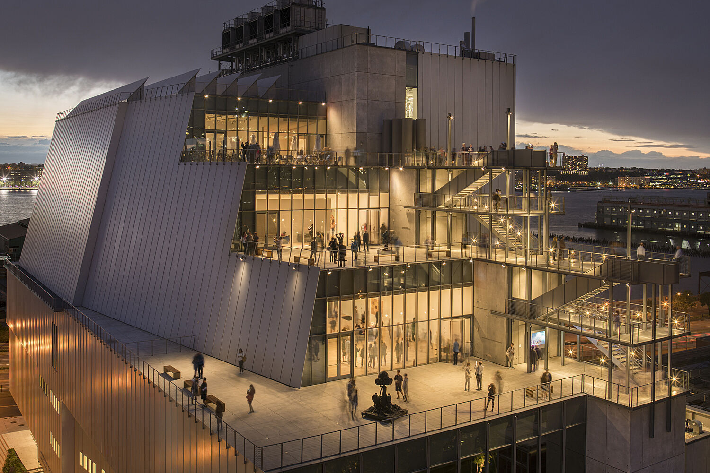
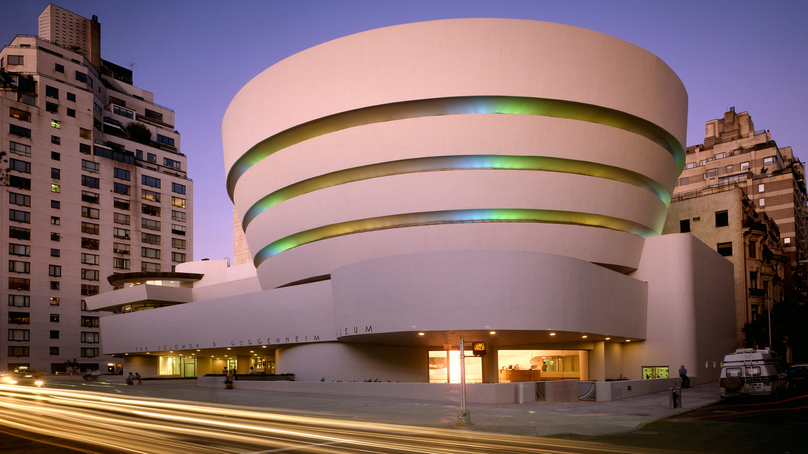

Whitney Museum of American Art
American art in a building with great views over the High Line and the Hudson.
Read MoreThis site shares what stood out when I visited the four musuems in New York City: Whitney Museum of American Art, the Solomon R. Guggenheim Museum, The Metropolitan Museum of Art, and the Museum of Modern Art. Each page is a short personal reviews of each musuems and things I like about these musuems, also with some tips for first-time visitors.

American art in a building with great views over the High Line and the Hudson.
Read More
Modern art inside Frank Lloyd Wright’s famous spiral — a walk up the ramp is an experience by itself.
Read More
A huge collection spanning centuries — easy to spend a whole day wandering.
Read More
Modern and contemporary works, from paintings to design and film.
Read More